TRANSFORME OS RESULTADOS DA
OLIMPÍADA BEBRAS EM DECISÕES
PEDAGÓGICAS PARA SUA ESCOLA
Ao participar do Bebras, sua escola recebe Relatórios de Desempenho que mostram como os estudantes estão desenvolvendo habilidades de Pensamento Computacional e ajudam a equipe a planejar os próximos passos.
INSCREVA SUA ESCOLA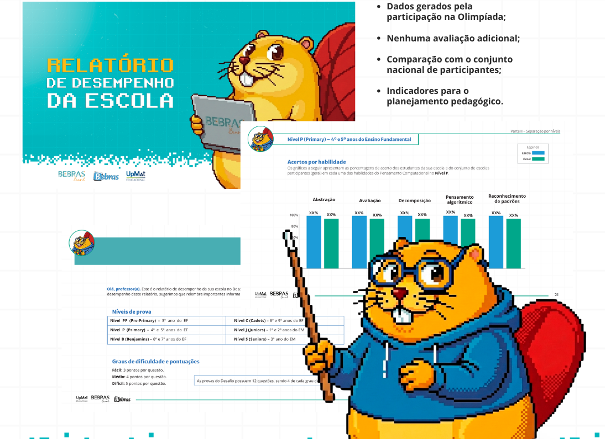
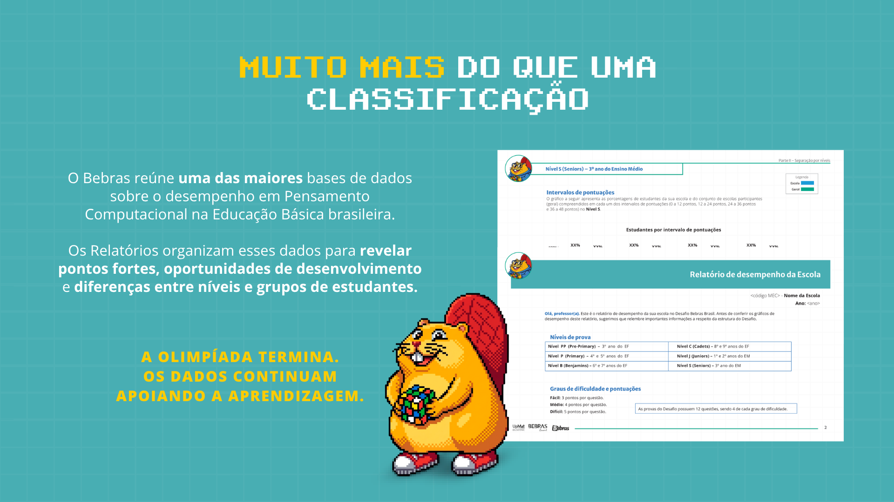
O Bebras reúne uma das maiores bases de dados sobre o desempenho em Pensamento Computacional na Educação Básica brasileira.
Os Relatórios organizam esses dados para revelar pontos fortes, oportunidades de desenvolvimento e diferenças entre níveis e grupos de estudantes.
A OLIMPÍADA TERMINA.
OS DADOS CONTINUAM
APOIANDO A APRENDIZAGEM.
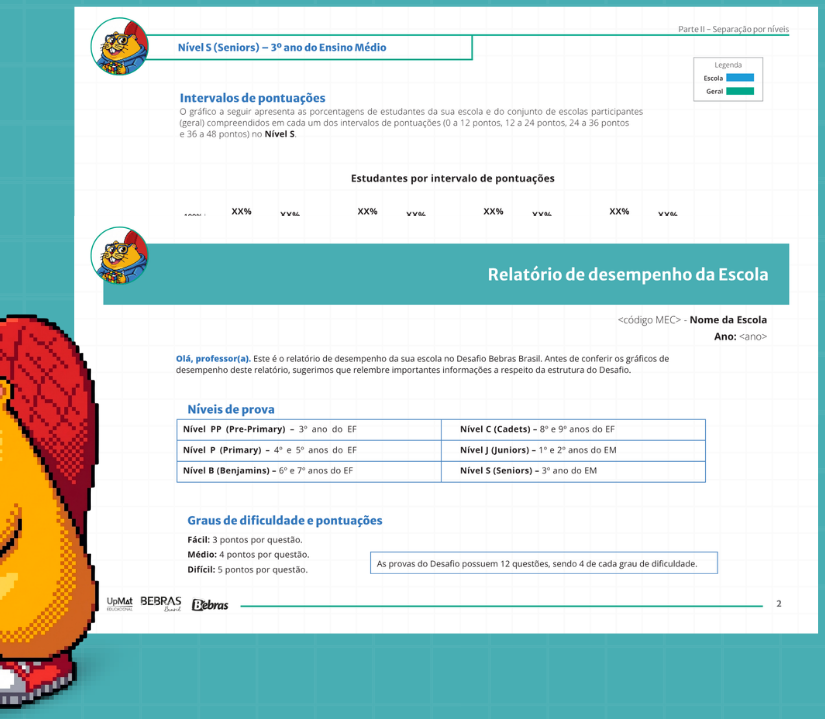
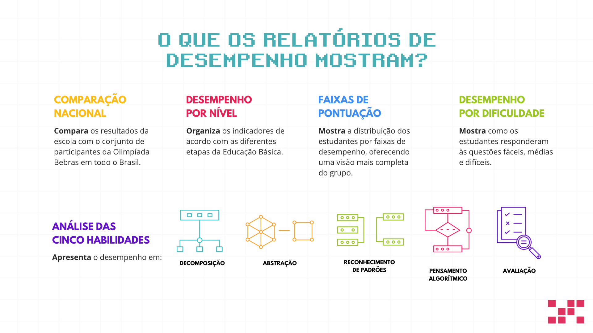
Compara os resultados da escola com o conjunto de participantes da Olimpíada Bebras em todo o Brasil.
Organiza os indicadores de acordo com as diferentes etapas da Educação Básica.
Mostra a distribuição dos estudantes por faixas de desempenho, oferecendo uma visão mais completa do grupo.
Mostra como os estudantes responderam às questões fáceis, médias e difíceis.
Apresenta o desempenho em:
Decomposição
Abstração
Reconhecimento de padrões
Pensamento algorítmico
Avaliação
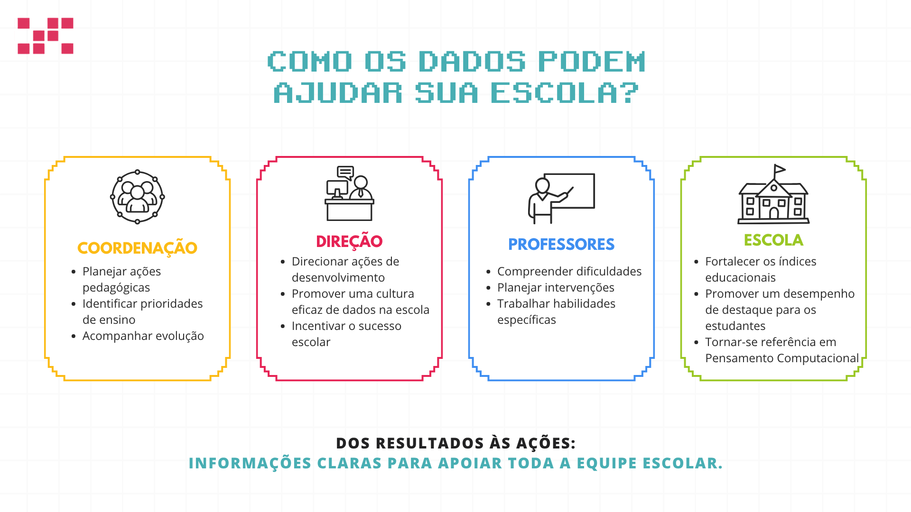
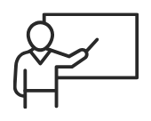
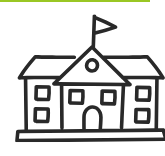
DOS RESULTADOS ÀS AÇÕES: INFORMAÇÕES CLARAS PARA APOIAR TODA A EQUIPE ESCOLAR.
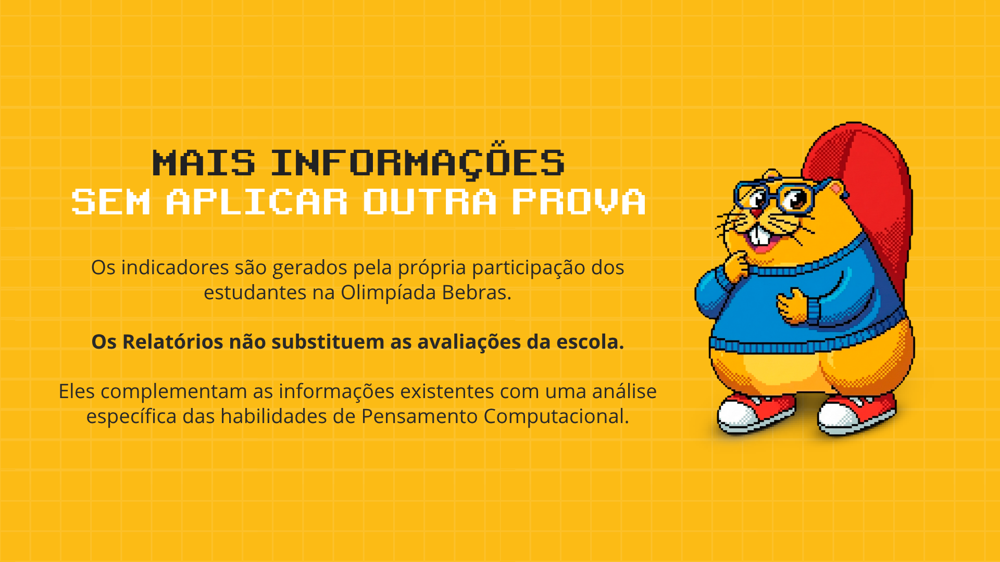
Os indicadores são gerados pela própria participação dos estudantes na Olimpíada Bebras.
Os Relatórios não substituem as avaliações da escola.
Eles complementam as informações existentes com uma análise específica das habilidades de Pensamento Computacional.
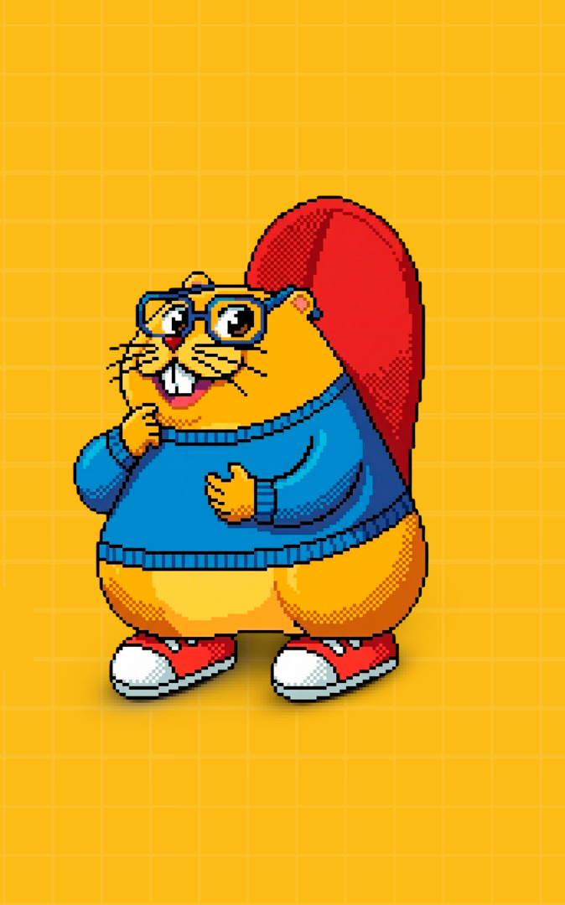
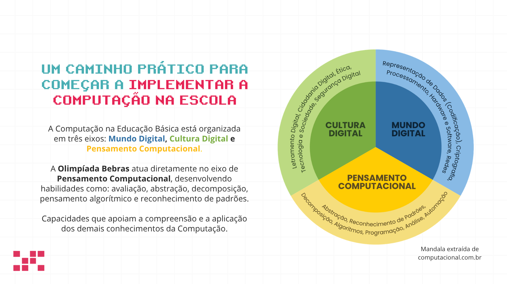
A Computação na Educação Básica está organizada em três eixos: Mundo Digital, Cultura Digital e Pensamento Computacional.
A Olimpíada Bebras atua diretamente no eixo de Pensamento Computacional, desenvolvendo habilidades como: avaliação, abstração, decomposição, pensamento algorítmico e reconhecimento de padrões.
Capacidades que apoiam a compreensão e a aplicação dos demais conhecimentos da Computação.
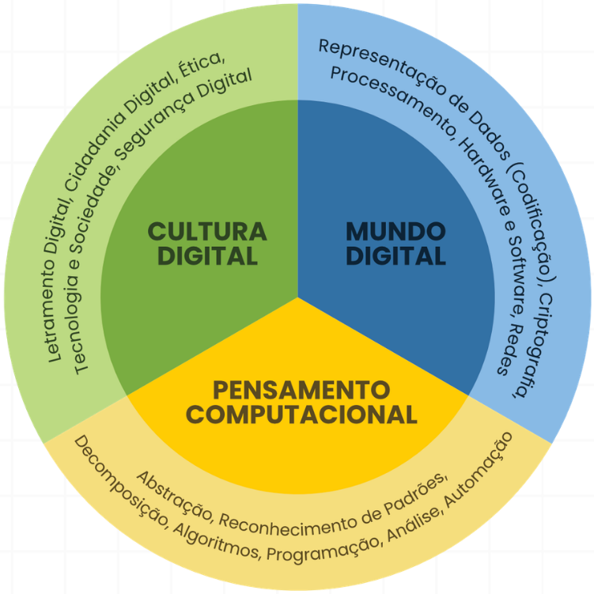
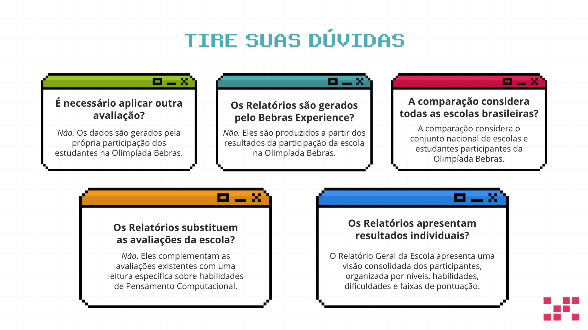
Não. Os dados são gerados pela própria participação dos estudantes na Olimpíada Bebras.
Não. Eles são produzidos a partir dos resultados da participação da escola na Olimpíada Bebras.
A comparação considera o conjunto nacional de escolas e estudantes participantes da Olimpíada Bebras.
Não. Eles complementam as avaliações existentes com uma leitura específica sobre habilidades de Pensamento Computacional.
O Relatório Geral da Escola apresenta uma visão consolidada dos participantes, organizada por níveis, habilidades, dificuldades e faixas de pontuação.